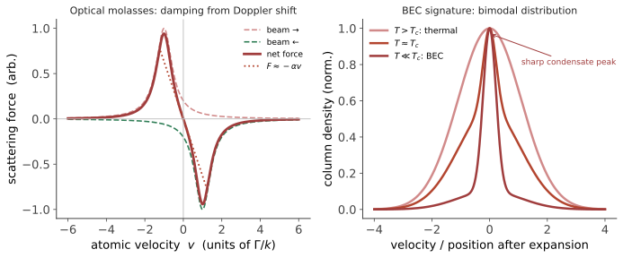

原子分子光物理 · 激光冷却与量子气体
对标：Foot《Atomic Physics》/ Metcalf & van der Straten《Laser Cooling and Trapping》/ Pethick & Smith《BEC in Dilute Gases》｜ 本页自足：从"为什么要冷"讲起，不预设冷原子背景。 这是一个用光把物质冷到十亿分之一开尔文的领域——比星际空间冷得多，实验室之外宇宙中不存在这样的低温。它在三十年里贡献了多个诺贝尔奖，并把"量子力学"从计算变成了可以在桌面上直接摆弄的东西。

1. 为什么要把原子冷下来
温度就是无规运动。 室温下空气分子速度约 500 m/s，一个原子在你能观察它之前早已飞出视野。
但更深的理由是量子的。每个粒子有一个德布罗意波长
温度越低，波长越长。 当 \(\lambda_{dB}\) 增长到与粒子间距相当时，相邻原子的波包开始重叠——此时它们不再是"一群小球"，而必须作为全同粒子的量子多体系统来处理。
这个判据可以写成一个无量纲数（相空间密度）：
对典型的稀薄原子气（\(n\sim10^{14}\ \mathrm{cm^{-3}}\)），这要求温度低到 微开尔文乃至纳开尔文量级。
所以"冷"不是目的，"让量子性显现"才是。 常规制冷（液氦约 4 K）差了六个数量级，必须用全新的办法。
2. 激光冷却：用光子刹车
核心思想出奇地简单：原子吸收一个光子会获得一份动量反冲（约 \(\hbar k\)）；随后自发辐射把光子随机地朝各个方向吐出去，多次平均后自发辐射的反冲相消。净效果是：原子每吸收-发射一轮，就沿激光方向被推一下。
但推动不等于冷却——需要让力总是与速度反向。技巧在于多普勒效应：
- 把激光频率调到略低于原子共振（称为红失谐）；
- 迎着激光运动的原子看到的频率被蓝移，更接近共振 → 吸收强 → 被减速；
- 顺着激光运动的原子看到的频率被进一步红移 → 吸收弱。
从两个方向都打上这样的激光，净力就成为
这是一个纯粹的阻尼力。原子仿佛陷入粘稠的介质中——因此得名光学粘胶（optical molasses）。三对正交激光即可在三维上冷却。
冷却有极限吗？有两个。
多普勒极限：自发辐射的方向是随机的，每次都给原子一个随机反冲，构成"加热"。冷却与这种加热平衡于
\(\Gamma\) 是激发态的自然线宽。对钠原子约 240 μK。
一个漂亮的意外：1980 年代实验测到的温度低于多普勒极限。理论并没有错，而是遗漏了一个机制——原子在偏振梯度中运动时，会反复地"爬坡"损失动能（西西弗斯冷却），可达到反冲极限 \(k_BT_r=\hbar^2k^2/m\)（微开量级）。这是实验超出理论预期、迫使理论补课的经典案例（1997 诺贝尔物理学奖）。
磁光阱（MOT）：光学粘胶只阻尼速度、不束缚位置。加上一个梯度磁场，使塞曼分裂随位置变化，则吸收也变成位置依赖的——同时得到冷却与囚禁。MOT 是几乎所有冷原子实验的第一步。
3. 蒸发冷却与玻色–爱因斯坦凝聚
激光冷却止步于微开，而 BEC 需要纳开。最后这一步靠一个非常"日常"的机制——蒸发。
把原子囚禁在磁阱或光阱中，逐渐降低阱的深度，让能量最高的原子逃逸；剩下的原子通过碰撞重新达到热平衡，平均温度下降。这就是一杯热咖啡变凉的原理，只是被精确控制。代价是原子数大量损失（常损失 99% 以上），换来温度下降三个数量级。
当 \(n\lambda_{dB}^3\) 越过临界值时会发生什么？
对玻色子，量子统计给出一个惊人的结果：基态的占据数变得宏观地大。
这不是普通的"都跑到最低能级"——它是纯粹的统计效应：玻色子倾向于占据同一个态，且这种倾向在低温下变成一场雪崩。爱因斯坦在 1925 年预言了它，七十年后才被实现（1995，2001 年诺贝尔奖）。
实验上如何确认：关掉阱，让原子云自由飞行一段时间后成像——飞行距离正比于速度。
- 热气体给出宽的高斯分布；
- BEC 出现时，宽分布中央长出一个尖锐的窄峰（图 amo-01.1 右）；
- 且这个峰各向异性（反映阱的形状，是量子基态波函数的直接印记），而热云是各向同性的。这个不对称是 BEC 最有说服力的判据之一。
BEC 是一个宏观量子体系：数十万个原子共享同一个波函数。两团 BEC 相互交叠会产生干涉条纹——物质波的杨氏双缝。
4. 费米子与配对
对费米子（如 \(^{40}\)K、\(^6\)Li），泡利原理禁止占据同一态，故没有 BEC。降温后形成简并费米气：从最低能级往上填满至费米面——这是白矮星内部与金属中电子气的同一物理，只是可以在桌面上调节参数。
更有意思的是可调相互作用：利用Feshbach 共振，用磁场就能连续调节原子间散射长度，甚至改变符号。这带来了一个物理学上罕见的能力——把哈密顿量当旋钮拧。
由此可以实现 BEC–BCS 渡越：
- 强吸引一侧：原子两两结合成分子，然后分子凝聚（BEC）；
- 弱吸引一侧：形成弥散的 Cooper 对（与超导的 BCS 机制同类）；
- 中间是"幺正区"，散射长度发散，系统只剩下一个长度尺度，行为普适。
这使得超导的核心物理可以在完全可控的系统中被逐点研究——冷原子因此成为凝聚态的"模拟器"。
5. 光晶格与量子模拟
用互相干涉的激光可造出周期性的光学势阱——光晶格。原子在其中的行为，与电子在晶体中的行为遵守同一个哈密顿量（Hubbard 模型）：
但有一个决定性的差别：这里的 \(t\) 和 \(U\) 可以由实验者任意调节，而真实材料中它们是给定的。
这就是"量子模拟"的思想（费曼 1982 年的提议）：用一个可控的量子系统去模拟另一个难以计算的量子系统。
已实现的标志性成果包括：超流–Mott 绝缘体相变的直接观测、量子气体显微镜（可对单个格点上的单个原子成像）。对于经典计算机难以求解的强关联问题，这提供了一条实验性的求解路径——虽然目前仍限于特定模型【前沿】。
6. 离子阱与精密测量
离子阱是另一条主线：用电磁场囚禁带电离子，激光冷却到运动基态。
- 量子计算：离子的内态编码量子比特，共同的振动模式充当"数据总线"实现比特间耦合。离子阱是保真度最高的量子比特平台之一（相干时间长，见 🔗 oqs-01）；
- 光钟：以光学跃迁（而非微波）作为频率标准。当前最好的光钟不确定度已达 \(10^{-18}\) 量级——相当于宇宙年龄内误差不到一秒。 它的灵敏度已经高到成为一种探测器：把两台光钟放在相差几十厘米的高度，可测出广义相对论的引力红移（🔗 gr-01）；也被用于寻找基本常数随时间的漂移与某些暗物质模型。
2012 年诺贝尔奖授予离子阱与腔量子电动力学中"操纵单个量子系统"的实验方法——它标志着单量子体系从思想实验变成了日常操作对象。
7. 要点回顾
- 冷却的目的是让 \(n\lambda_{dB}^3\gtrsim2.6\)，即让物质波交叠、量子统计显现；
- 激光冷却靠红失谐 + 多普勒效应，把光压变成阻尼力 \(F=-\alpha v\)；MOT 加磁梯度实现囚禁；
- 多普勒极限被实验突破，催生了西西弗斯冷却理论——实验领先理论的经典案例；
- 蒸发冷却完成最后三个数量级；BEC 的判据是双峰分布与各向异性膨胀；
- Feshbach 共振使相互作用可调，实现 BEC–BCS 渡越——超导物理的可控实验室；
- 光晶格 = 可编程的 Hubbard 模型，量子模拟的主力平台；
- 离子阱与光钟把精密测量推进到 \(10^{-18}\)，已能测量厘米级高度差的引力红移。\(\blacksquare\)
下一页：本站最后一页——了望塔。前面所有内容都有实验支撑；接下来要看的，是目前还没有实验能够判决的地带，以及如何诚实地对待它。